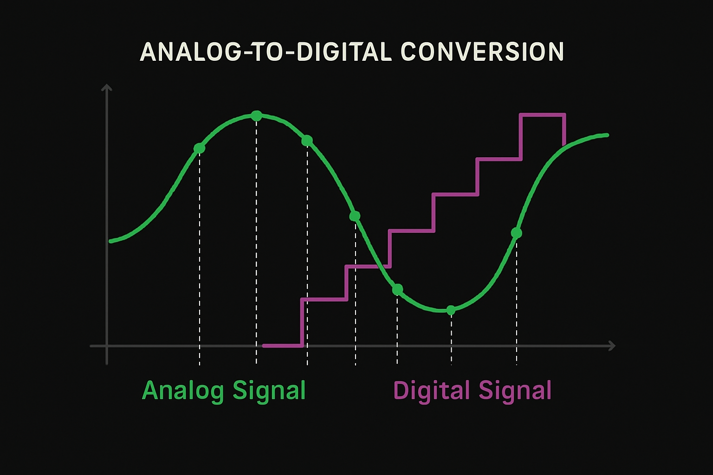
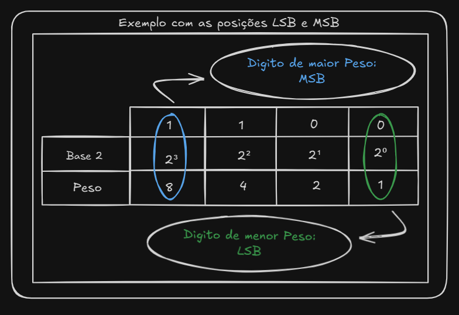

Algumas coisas nesse mundo me deixam fascinado e uma delas é a tecnologia. Quando enfim decidi que queria estudar Ciências da Computação, comecei a preencher uma grande lacuna de curiosidades na minha mente.
Uma das coisas que mais fazemos durante a vida é escutar música. Quando vibramos as cordas vocais ou um instrumento vibra, o ar oscila em ondas contínuas de pressão. Essas ondas não têm interrupções, e isso é o coração de um sinal analógico.
Durante muito tempo essa tecnologia dominou dispositivos como amplificadores de áudio, mas sinais analógicos sofrem com ruídos e distorções. A cada cópia de uma fita, a cada repetição de um sinal, um pouco mais de imperfeição aparecia no caminho.
Com a chegada dos sistemas digitais, essas ondas contínuas passaram a ser representadas de forma discreta. Agora usamos apenas dois estados: 0 e 1, os bits. Os trabalhos de Claude Shannon mostraram que músicas, imagens e textos poderiam ser representados em bits, desde que a coleta e a precisão fossem suficientes.
O processo de conversão acontece em duas etapas: amostragem e quantização. Na amostragem, o sistema tira milhares de “fotografias” por segundo da onda sonora. No caso de um CD, são 44.100 amostras por segundo.
Isso não é aleatório. O critério vem do teorema de Nyquist-Shannon: para representar um sinal fielmente, a taxa de amostragem precisa ser pelo menos o dobro da maior frequência presente nele.
Depois da amostragem vem a quantização. Cada ponto medido precisa ser traduzido em um número. Quanto mais bits usamos, mais degraus essa régua tem e mais fiel o sinal digital se aproxima do analógico.

Esses números passam a ser manipulados pelo computador em forma binária. Aí entram conceitos como MSB e LSB, que ajudam a entender o peso de cada posição dentro do número.

No fim, o ciclo de sinal analógico virando digital, sendo processado e depois voltando ao estado analógico acontece o tempo inteiro ao nosso redor. Está no microfone, nos fones, nas chamadas de vídeo, nas câmeras e em praticamente toda tecnologia moderna que usamos sem pensar muito sobre isso.
O mundo físico é analógico, contínuo e cheio de detalhes. O digital é discreto, formado por recortes e números. A genialidade da engenharia está justamente em construir a ponte entre esses dois universos.